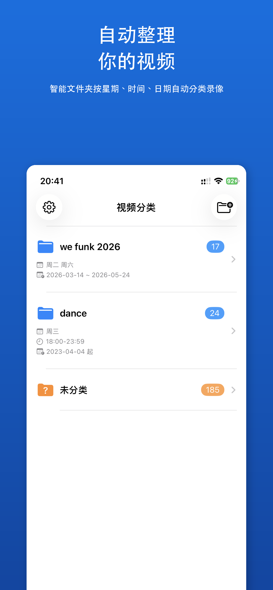
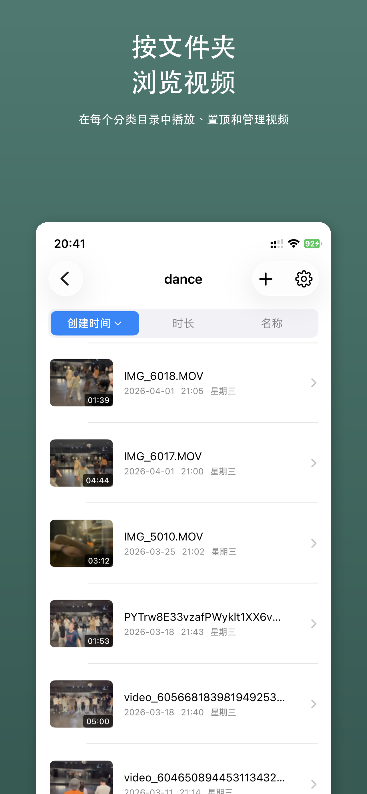
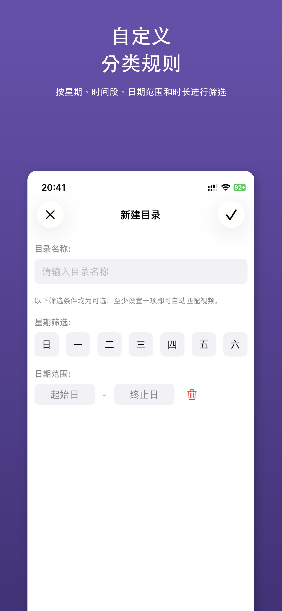
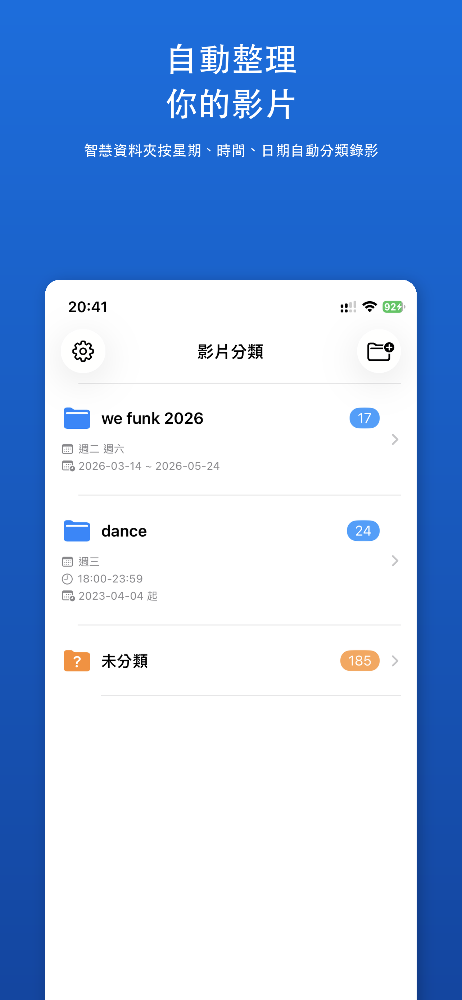
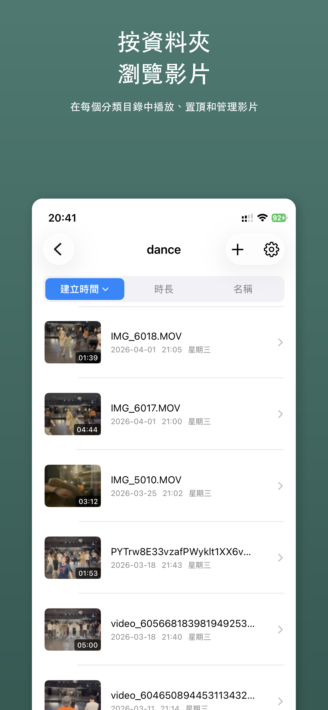
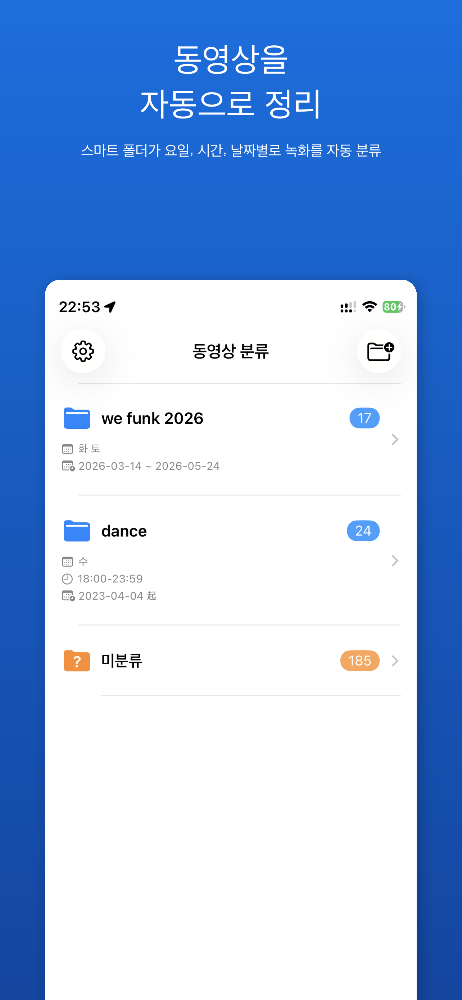

VideoSorter
Smart Video Organizer
Automatically Sort Your Videos by Schedule
Set rules based on weekday, time, date, and duration — VideoSorter reads your photo library and organizes lecture recordings into folders automatically. Perfect for students and teachers.
Set rules by weekday, time of day, date range and duration. A live preview shows which videos match while you edit.
Every time you open the app, new videos in your photo library are imported and sorted, with a notice showing what was found.
Create your own folders and pick videos by hand. Anything that matches no rule goes to Uncategorized, so nothing gets lost.
Watch sorted videos right in the app, pin important ones to the top, and remove the ones you no longer need.
Only metadata (creation date and duration) is read. Everything is processed on your device; videos are never uploaded.
Remove all ads with a monthly or yearly subscription. Cancel anytime.


スケジュールに合わせて動画を自動分類
曜日・時間帯・日付範囲・動画の長さでルールを設定するだけ。フォトライブラリから講義録画を自動でフォルダに振り分けます。学生や教師に最適です。
曜日・時間帯・日付範囲・再生時間で条件を設定。編集中にマッチする動画をリアルタイムでプレビューできます。
アプリを開くたびにフォトライブラリの新しい動画を取り込んで自動分類。見つかった動画はお知らせで確認できます。
フォルダを自分で作成して動画を手動で追加。どの条件にも合わない動画は「未分類」に入るので、見落としません。
分類した動画をアプリ内でそのまま再生。重要な動画はピン留めで上に固定、不要な動画は削除できます。
読み取るのは作成日時と再生時間などのメタデータだけ。処理はすべてデバイス上で行い、動画をアップロードすることはありません。
月額または年額のサブスクリプションで、すべての広告を非表示にできます。いつでも解約可能です。


按日程自动分类你的视频
设置星期、时间段、日期范围和时长规则，视频整理自动从相册读取讲课录像并整理到对应文件夹。专为学生和教师设计。
按星期、时间段、日期范围和时长设置规则。编辑时可实时预览匹配到的视频。
每次打开 App 都会导入相册中的新视频并自动分类，并提示新发现的视频。
自己创建目录并手动添加视频。不符合任何规则的视频会进入「未分类」，不会遗漏。
在 App 内直接播放已分类的视频，把重要视频置顶，删除不需要的视频。
只读取创建时间和时长等元数据，所有处理都在设备上完成，视频绝不会上传。
通过月付或年付订阅移除所有广告，可随时取消。



依照排程自動分類你的影片
設定星期、時段、日期範圍和時長規則，影片整理自動從相簿讀取授課錄影並整理到對應資料夾。專為學生和教師設計。
依星期、時間段、日期範圍和時長設定規則。編輯時可即時預覽符合條件的影片。
每次開啟 App 都會匯入照片圖庫中的新影片並自動分類，並提示新發現的影片。
自行建立目錄並手動加入影片。不符合任何規則的影片會進入「未分類」，不會遺漏。
在 App 內直接播放已分類的影片，將重要影片置頂，刪除不需要的影片。
只讀取建立時間和時長等中繼資料，所有處理都在裝置上完成，影片絕不會上傳。
透過月付或年付訂閱移除所有廣告，可隨時取消。



Clasifica tus videos automáticamente por horario
Define reglas por día de la semana, hora, rango de fechas y duración. Clasificador de Videos lee tu biblioteca de fotos y organiza las grabaciones de clases en carpetas automáticamente. Ideal para estudiantes y profesores.
Define reglas por día de la semana, franja horaria, rango de fechas y duración. Mientras editas, ves en tiempo real qué videos coinciden.
Cada vez que abres la app, los videos nuevos de tu fototeca se importan y clasifican, con un aviso de lo que se encontró.
Crea tus propias carpetas y elige videos a mano. Lo que no coincide con ninguna regla va a «Sin clasificar», así no se pierde nada.
Mira los videos clasificados en la app, fija los importantes arriba y elimina los que ya no necesitas.
Solo se leen metadatos (fecha de creación y duración). Todo se procesa en tu dispositivo; los videos nunca se suben.
Quita todos los anuncios con una suscripción mensual o anual. Cancela cuando quieras.


일정에 따라 동영상을 자동 분류
요일, 시간대, 날짜 범위, 영상 길이로 규칙을 설정하면 동영상 분류가 사진 라이브러리에서 강의 녹화를 자동으로 폴더에 정리합니다. 학생과 교사에게 최적입니다.
요일, 시간대, 날짜 범위, 길이로 규칙을 설정하세요. 편집하는 동안 일치하는 동영상을 실시간으로 미리 볼 수 있습니다.
앱을 열 때마다 사진 보관함의 새 동영상을 가져와 자동으로 분류하고, 찾은 동영상을 알려 드립니다.
직접 폴더를 만들고 동영상을 골라 추가하세요. 어떤 규칙에도 맞지 않는 동영상은 '미분류'로 들어가므로 놓치지 않습니다.
분류된 동영상을 앱에서 바로 재생하고, 중요한 동영상은 상단에 고정하며, 필요 없는 동영상은 삭제할 수 있습니다.
생성 날짜와 길이 같은 메타데이터만 읽습니다. 모든 처리는 기기에서 이루어지며 동영상은 업로드되지 않습니다.
월간 또는 연간 구독으로 모든 광고를 제거할 수 있습니다. 언제든지 해지할 수 있습니다.
